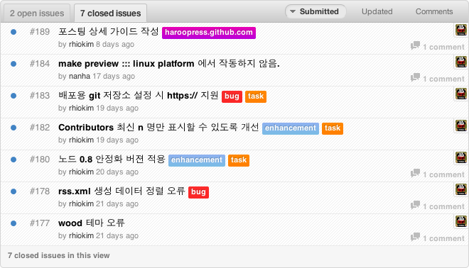
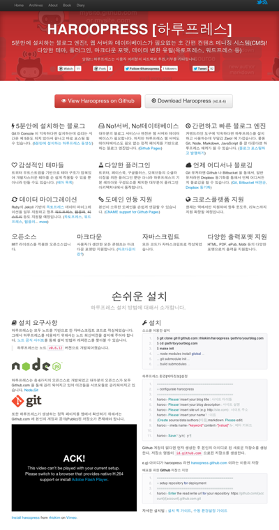
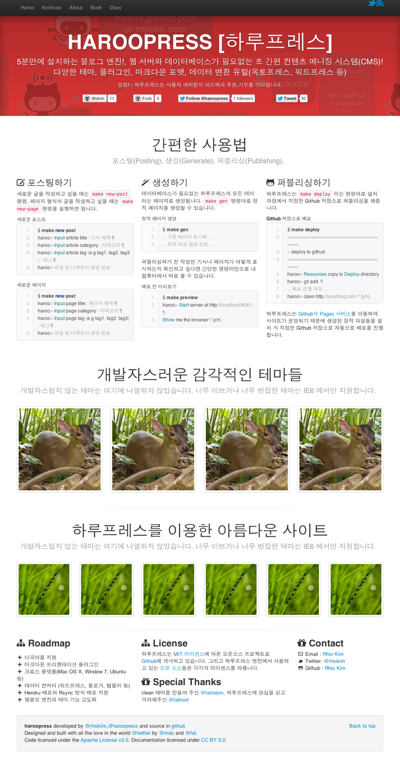

Rhio Kim
blog: http://rhio.tistory.com
twitter: @rhiokim
github: rhiokim
자바스크립트를 좋아하는 인간입니다.
굉장히 오랜만에 릴리즈를 하였습니다. 이유는 불지옥의 디아블로 때문입니다. 저의 개발자 역사에 5월 15일부터 45일간 야만용사, 마법사, 악마사냥꾼 만랩을 기록하였습니다. -_-;
이번 릴리즈의 목표는 정식 발표를 위한 사이트 개발과, 메뉴얼 작성 및 테스트로 발생한 버그 수정이였습니다.

노드 공식사이트 스타일의 테마 제작하여 nodejs.kr 에 적용하였습니다.
홍보! 현재 노드 닌자그룹을 nodejs.kr 을 통해서 만들고 있습니다. 관심있고 포스팅에 참여하고 싶은 분들은 언제든지 메일 주세요.
메뉴얼은 대부분 동영상으로 촬영하여 손쉽게 따라할 수 있도록 제작하고 있습니다.
 